Why this project
The Azure and network security projects in this portfolio applied changes directly through CLI workflows. Terraform changes that model: the network's desired state is written down first as declarative configuration, and a plan can be generated and reviewed before changes are applied to the cloud. This project builds a real multi-tier VPC that way, then goes a step further — refactoring the flat configuration into a reusable module with input variables, and deliberately introducing a manual change outside of Terraform to see whether terraform plan actually catches it.
Accessing the Terraform host and verifying tooling
This project was performed in a disposable training environment. Some screenshots intentionally retain lab-only values such as a temporary EC2 public IP, AWS account and role identifiers, instance/resource IDs, SSH fingerprints, and temporary infrastructure names so the workflow remains visible.
In production documentation, environment-specific identifiers, credentials, internal naming, SSH fingerprints, and any IP address tied to a real user, site, or organization would be redacted. I did not identify any residential/home IP address or personal-machine identifier in these captured lab screenshots.
SSH into the provisioned Terraform host
Connected over SSH to a pre-built instance with Terraform and the AWS CLI already installed. Accepting the host key on first connect and authenticating with the supplied credentials is the same trust-on-first-use model any new SSH host uses — the fingerprint prompt exists specifically so a connection can be recognized (and questioned) if it ever changes unexpectedly on a later connection.
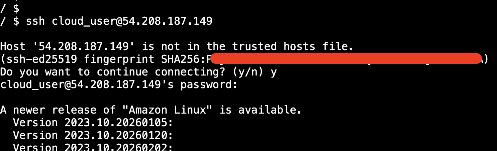
The temporary EC2 public IP and SSH host fingerprint shown here are lab values. Production screenshots would redact or crop environment-specific connection details when they are not required for the documentation.
Confirm the Terraform version
terraform version confirms the binary is actually on the PATH and reports which release is installed (1.14.3 here). Checking this before writing any configuration matters because Terraform's language and provider compatibility do shift between versions — knowing the exact version up front avoids chasing a syntax or behavior difference that's actually just a version mismatch later.
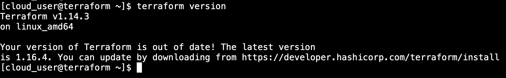
terraform version just prints the installed Terraform release — a quick way to confirm the tool exists and which version's behavior applies.
Confirm AWS credentials are available
aws sts get-caller-identity confirms the instance has a live, working set of AWS credentials — in this case an assumed IAM role rather than a hardcoded access key. This is worth confirming before writing a single line of Terraform: if the provider has nothing valid to authenticate with, every later command fails on credentials, not on anything actually wrong with the configuration — and it's much faster to rule that out now than to debug it after the fact.
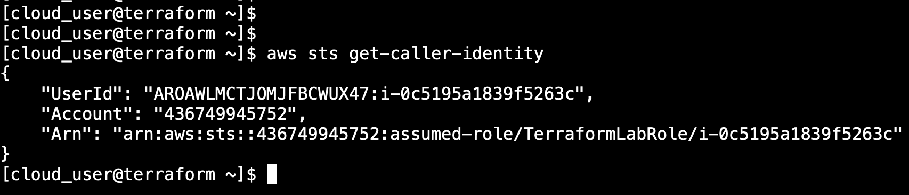
The returned account ID, user ID, and role ARN together confirm "yes, these credentials work and this is who AWS thinks is making requests" — before Terraform ever tries to use them.
The AWS account ID, assumed-role ARN, and STS user/session identifier shown here are lab-only identifiers. Production documentation would normally redact them even though they are not secret access credentials.
Create the project directory
A dedicated globomantics-network directory keeps this project's state file, lock file, and configuration isolated from anything else on the host. Terraform tracks state per working directory — mixing multiple projects into one folder risks one project's plan or apply reading or modifying state that belongs to something else entirely.
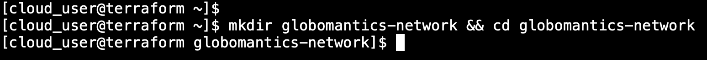
Writing the network configuration
Rather than one large file typed all at once, the configuration was built up in the order Terraform actually needs to reason about it: provider first, then the resources that depend on each other in sequence. Each block below was appended with a separate heredoc so the file's history stays legible as a sequence of deliberate additions, not one indistinguishable wall of HCL.
Declare the AWS provider
The required_providers block constrains the AWS provider to ~> 5.0 — a pessimistic constraint that allows compatible 5.x releases but blocks a 6.x major version from being selected silently. The constraint limits which versions are acceptable; the exact selected version is recorded later in .terraform.lock.hcl.
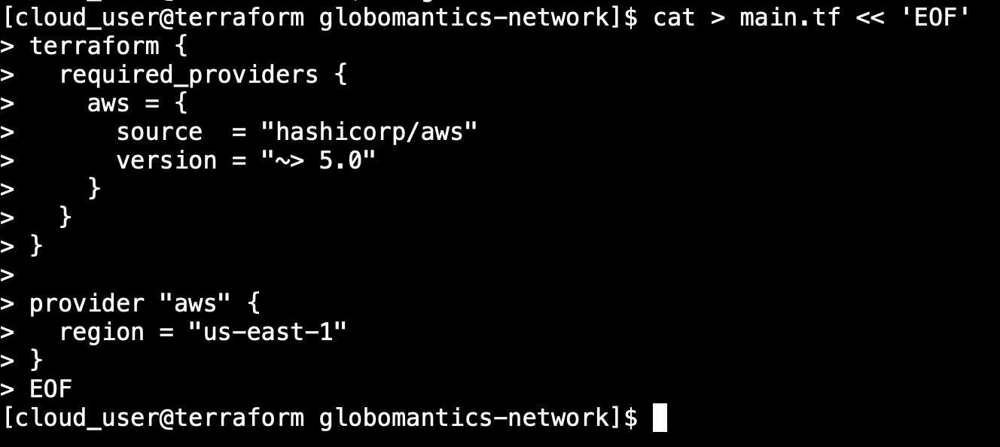
Verify the file after each addition
Running cat main.tf immediately after the first write confirms the heredoc landed exactly as intended before anything else gets appended on top of it. Catching a typo or a missing brace at this stage means fixing a four-line file — catching the same mistake after five more resources have been appended means re-reading the whole thing to find where it went wrong.
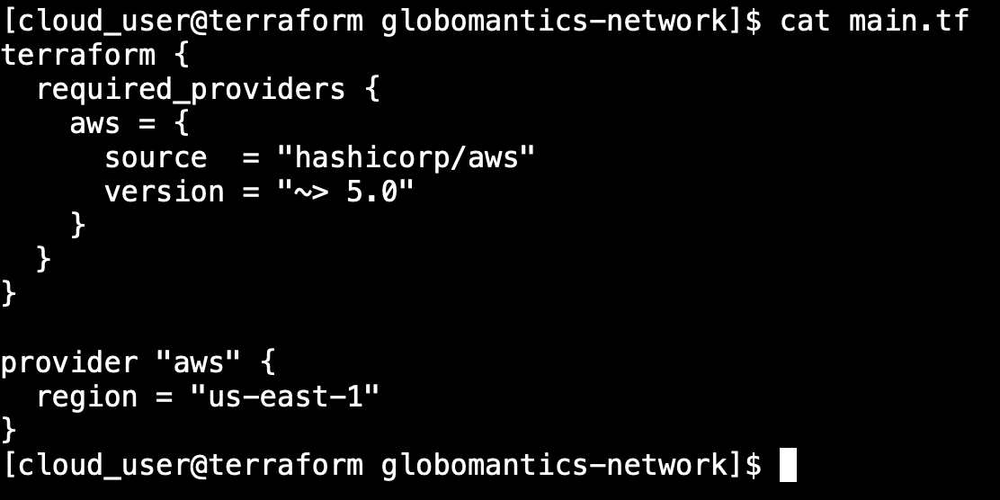
Add the VPC
The VPC uses a /16 CIDR (10.1.0.0/16) — deliberately larger than the two initial /24 subnets so the lab has room to grow. enable_dns_support and enable_dns_hostnames are both set explicitly rather than left as defaults. enable_dns_support controls use of the Amazon-provided DNS resolver, while enable_dns_hostnames controls whether eligible instances receive DNS hostnames.
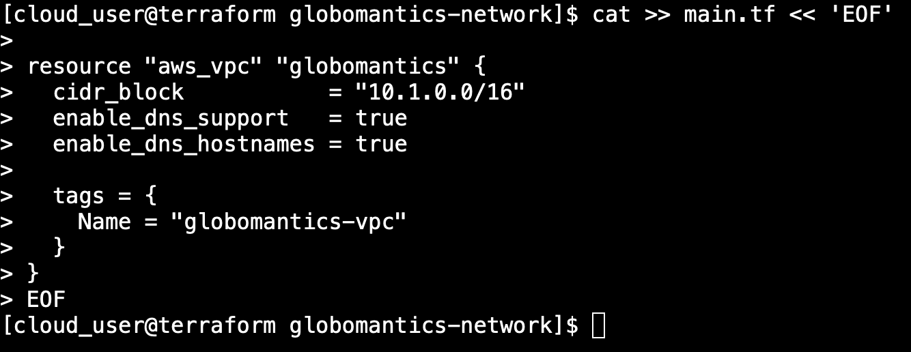
Add the public and private subnets
Two /24 subnets are carved from the VPC's /16. The public subnet uses map_public_ip_on_launch = true, which automatically assigns public IPv4 addresses to eligible instances launched there. That flag does not make the subnet public by itself — the public/private distinction comes from routing. The public subnet becomes public after its associated route table receives a default route to the Internet Gateway.
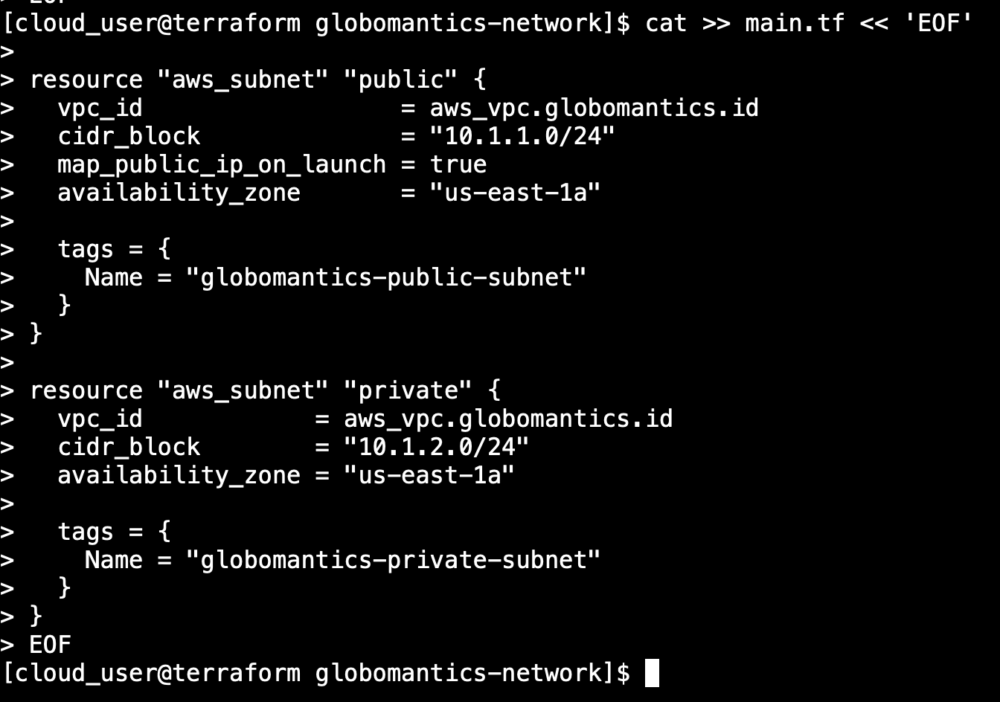
Add the Internet Gateway, route tables, and associations
The public route table gets an explicit 0.0.0.0/0 route pointed at the Internet Gateway; the private route table gets no internet default route at all. That routing difference is what keeps the private subnet from having direct internet connectivity in this lab.
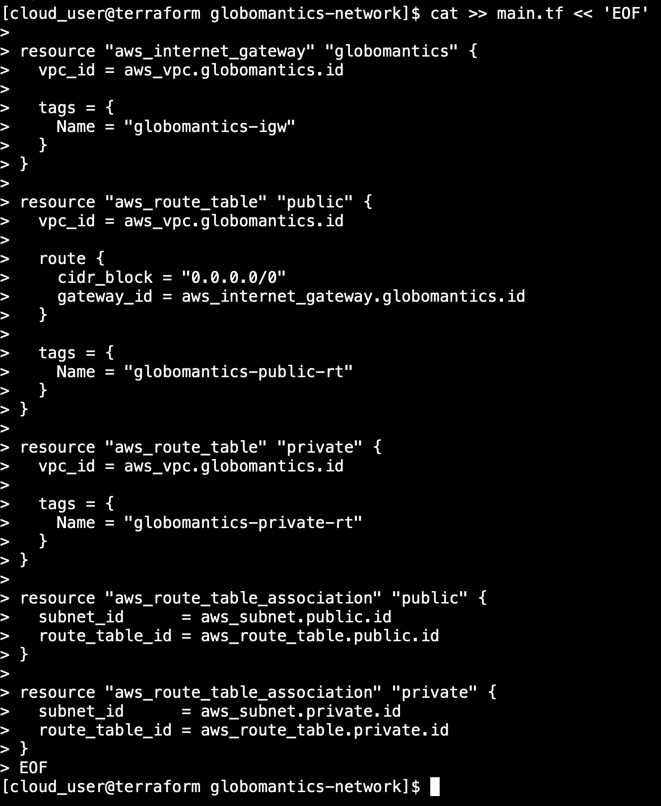
A private subnet commonly still needs outbound-only internet access for updates or package retrieval. In that design, its default route would typically point to a NAT Gateway rather than directly to an Internet Gateway.
Add the security group
The web security group allows inbound HTTP (80) and SSH (22) from 0.0.0.0/0, with all outbound traffic permitted. Scoping both ingress rules to any source is a deliberate shortcut for this lab, not an oversight — flagged directly in the lab's own guidance as something to narrow in a real deployment.
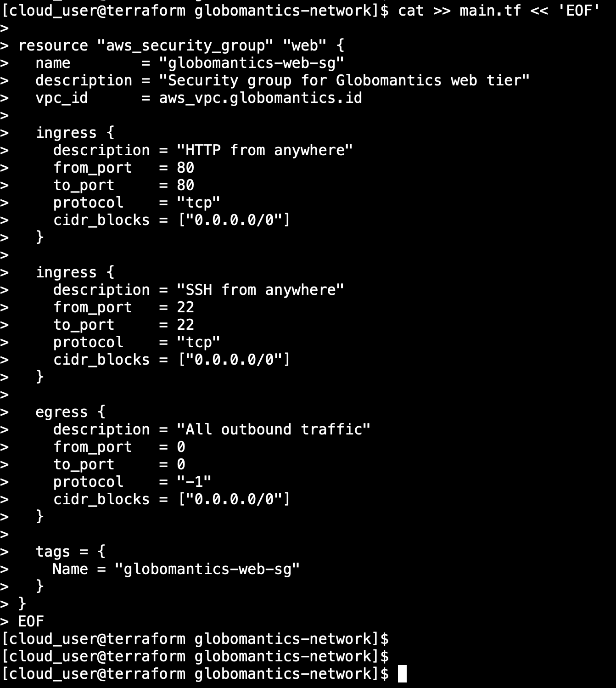
Access would be scoped to only what's needed — the principle of least privilege, a foundational security baseline that applies to network access the same way it applies to identity.
Result: a complete main.tf declaring one VPC, two subnets, an Internet Gateway, two route tables with associations, and one security group — nine resources total, none of them touched by hand in the AWS Console.
Reviewing the complete file before running anything
Before initializing or planning, the full file is read back top to bottom in one pass — the same instinct as confirming the NSG's default baseline before touching it in the Azure project: know exactly what's on record before asking a tool to act on it.
cat main.tf — the complete configuration
Reading the whole file confirms every block from steps 05–10 is present, in order, and free of leftover heredoc artifacts (stray > prompts, an unclosed brace) that a partial paste or an interrupted terminal session could otherwise leave behind.
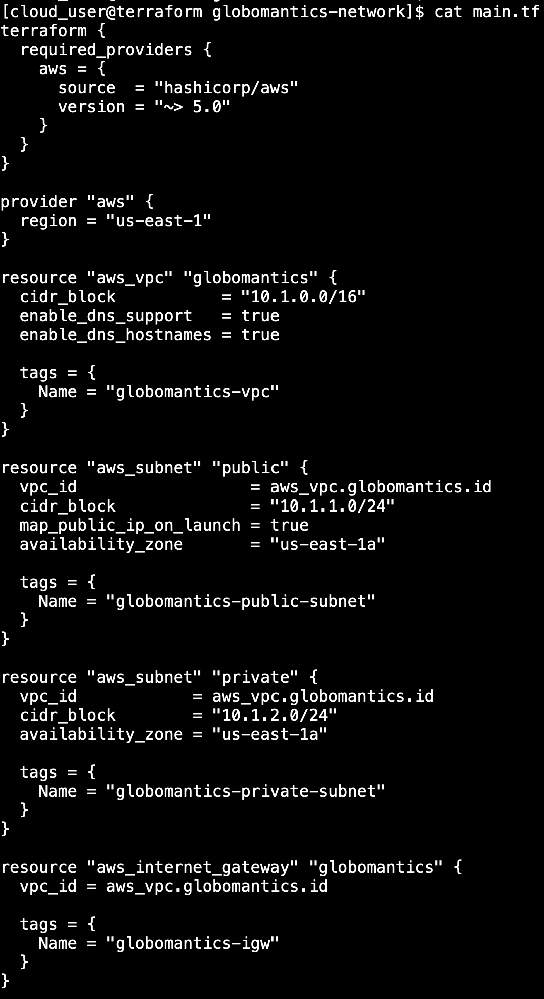
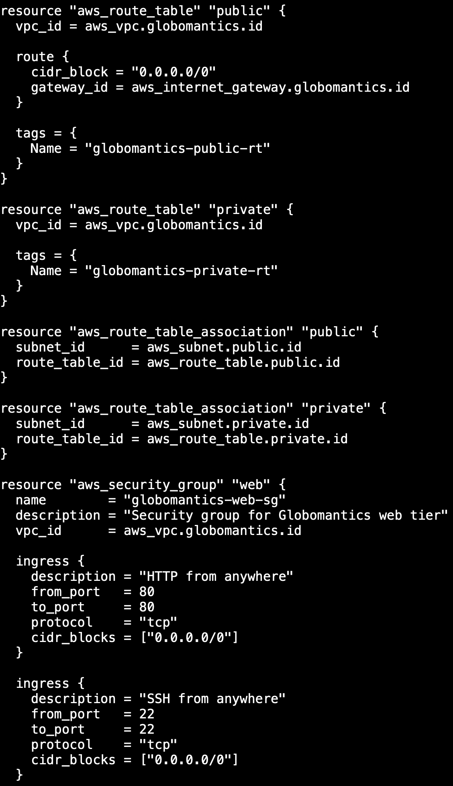
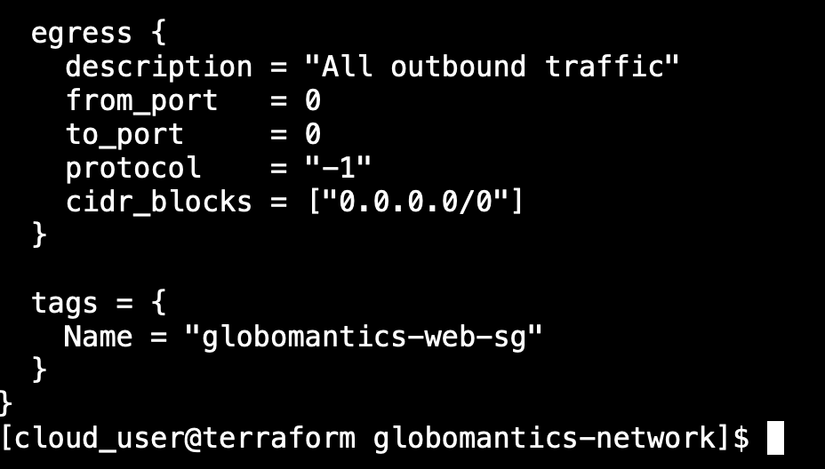
Initializing the working directory
Run terraform init
Terraform reads the required_providers block, downloads the matching AWS provider plugin (v5.100.0, satisfying the ~> 5.0 constraint), and writes a .terraform.lock.hcl file recording the selected provider version. When that lock file is committed and shared with the configuration, other users and environments can reuse the same provider selection instead of resolving a different compatible release later.
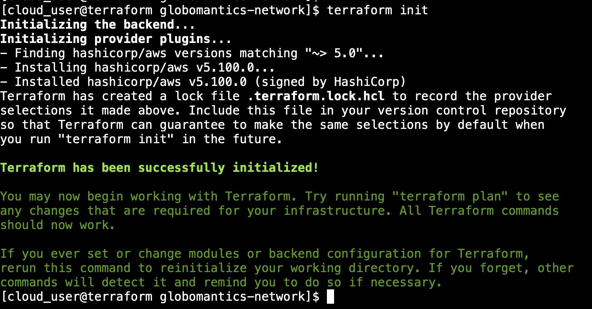
terraform init prepares the working directory by installing required providers, initializing modules and backend configuration as applicable, and creating or updating the dependency lock file. It does not itself create infrastructure.
Confirm the provider plugin on disk
A quick ls against .terraform/providers/registry.terraform.io/hashicorp/ confirms the aws plugin directory actually exists locally, rather than just trusting the init output's success message. It's the same "verify, don't assume" pattern used throughout the Azure project — a command reporting success and a resource actually existing in the expected state are two different claims.
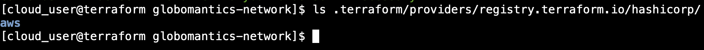
Previewing the change before touching AWS
Run terraform plan
This is the step that makes Terraform fundamentally different from the CLI work in the earlier projects: nothing has been created in AWS yet. The plan is a dry run — Terraform reads the configuration, compares it against the (currently empty) state file, and reports exactly what it intends to do before doing it. Reviewing a plan like this is the point where a mistake gets caught on a printout instead of in a live account — an oversized CIDR block or an accidentally-public subnet is far cheaper to fix here than after apply.
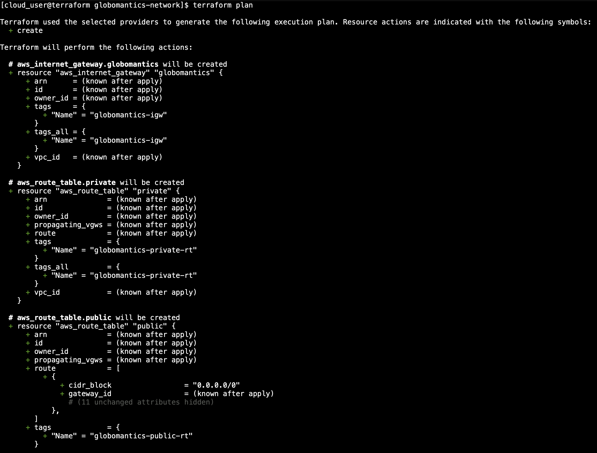
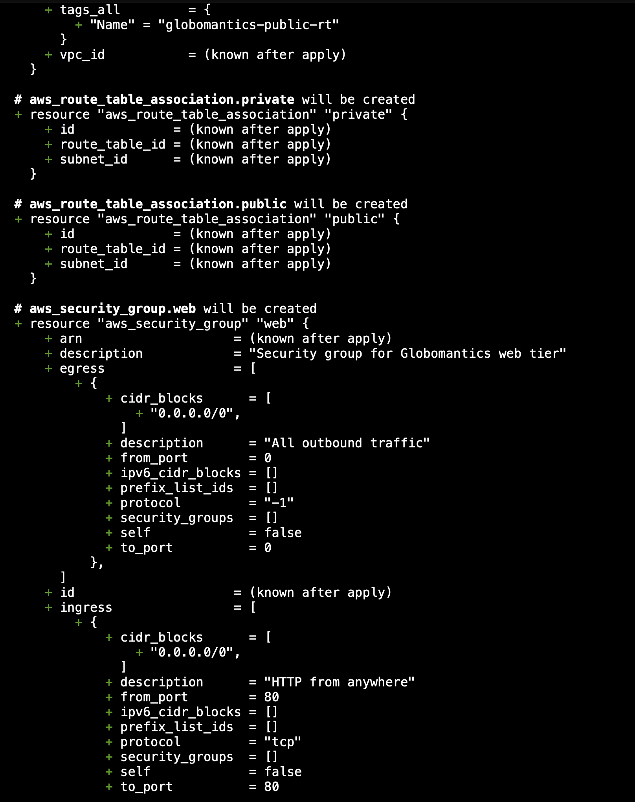
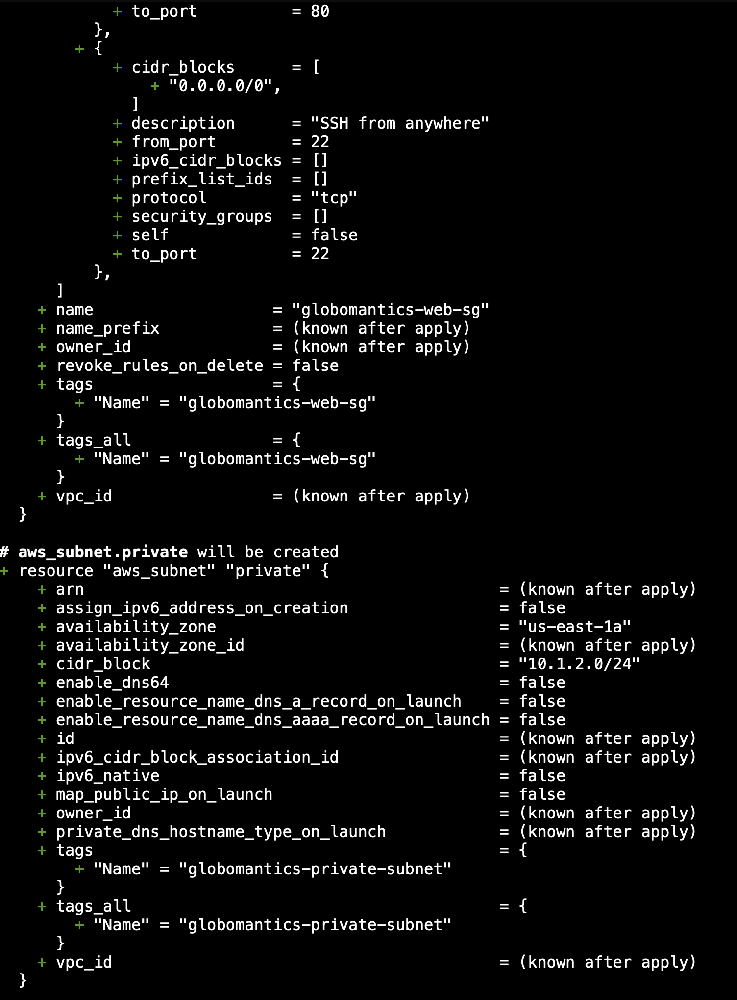
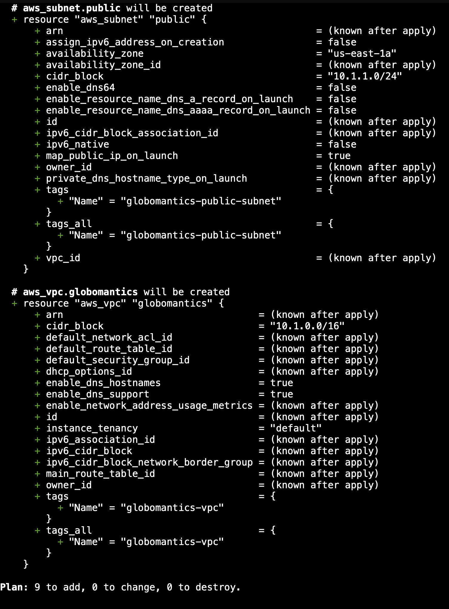
A + next to a resource means Terraform intends to create it; Plan: 9 to add, 0 to change, 0 to destroy is the one-line summary confirming this is a brand-new build with nothing being modified or removed.
Result: Terraform's plan lines up exactly with intent — nine resources to add, matching the nine blocks written into main.tf, zero to change, zero to destroy. Nothing has been applied to AWS yet.
Provisioning the real infrastructure
Run terraform apply
Confirming with yes at the interactive prompt allows Terraform to create the AWS resources. Because this workflow did not save the earlier plan with terraform plan -out=..., terraform apply generates a fresh execution plan before applying it. The result still matched the intended build: nine resources created.
terraform apply creates or changes infrastructure to match the configuration. Without a saved plan file, it generates a new execution plan and asks for confirmation before applying it. To apply the exact plan reviewed earlier, the workflow would use terraform plan -out=tfplan followed by terraform apply tfplan.
Changes would go through a reviewed, approved pipeline rather than a person typing yes at their own terminal — a standard change-management baseline for infrastructure as code.
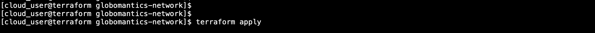
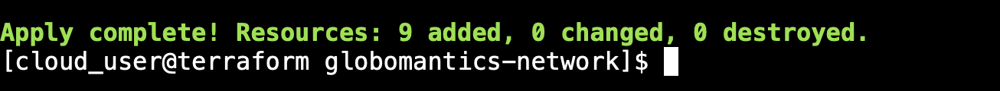
Confirm what Terraform is now tracking
terraform state list enumerates every resource Terraform believes it owns and is responsible for managing going forward. This matters beyond a sanity check: anything not in this list — even if it exists in AWS — is invisible to Terraform and won't be touched, updated, or protected by any future plan or apply against this configuration.
State would live in a shared, locked remote backend rather than a single local file — a standard baseline for teams collaborating safely on the same infrastructure.
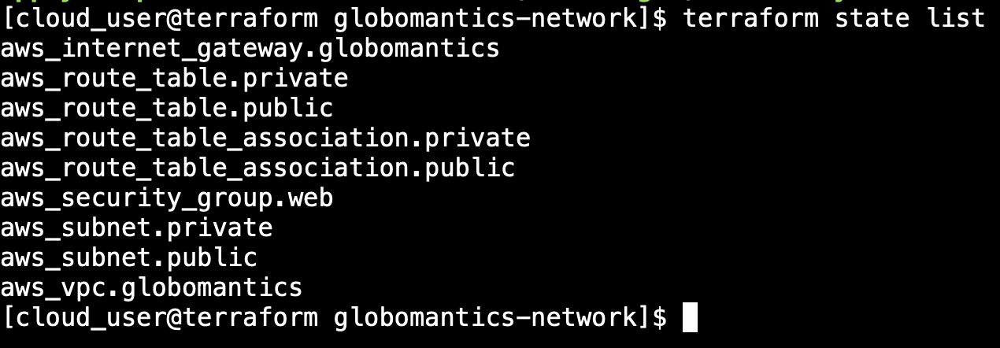
Inspect the resource attributes recorded in state
terraform show piped through grep displays the resource attributes Terraform recorded in state after the apply, including IDs and AWS-assigned values such as the default route table and default security group. Cross-checking the CIDR blocks this way confirms Terraform's recorded state matches what the configuration declared.
The VPC ID, route-table ID, security-group ID, DHCP options ID, ARN, and similar cloud resource identifiers shown in state are lab values. Production screenshots would normally redact environment-specific resource identifiers.
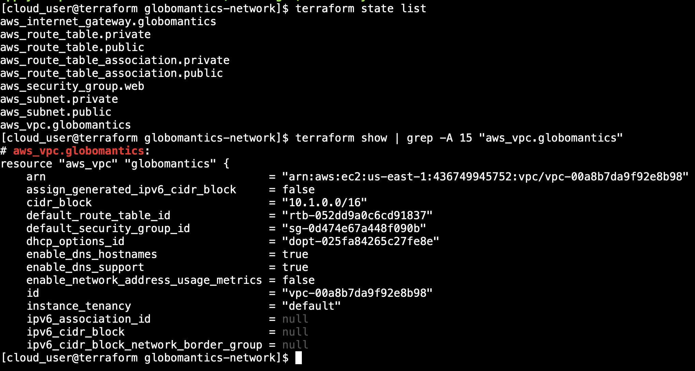
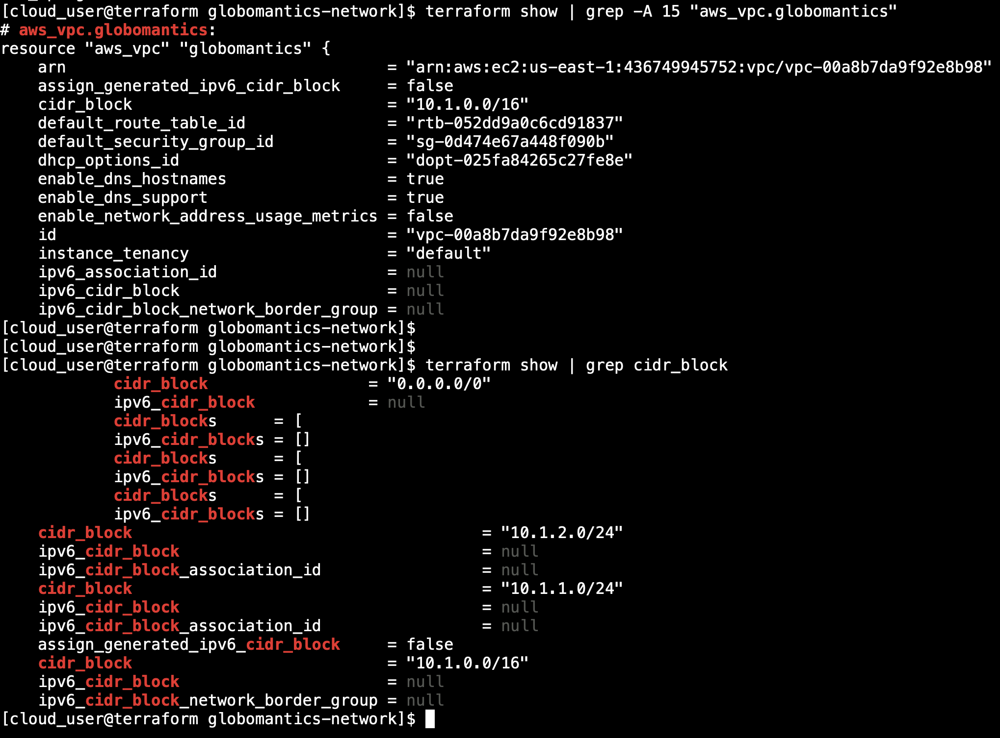
Destroying the flat configuration
Before refactoring into a module, the flat deployment is torn down completely rather than modified in place. Migrating live infrastructure to a module without destroying first is possible (via terraform state mv), but destroying and rebuilding is the more honest way to prove the module produces an equivalent result from scratch — no leftover state entries masking a mistake in the refactor.
Confirm the destroy
Terraform requires typing yes in full at this prompt — not y — specifically because destroy is irreversible and the extra keystrokes are a deliberate speed bump against confirming out of habit.
terraform destroy deletes every resource Terraform is currently tracking in state — the exact reverse of apply. Typing the full word yes (not just y) is Terraform's way of making sure this specific, irreversible action was really intended.
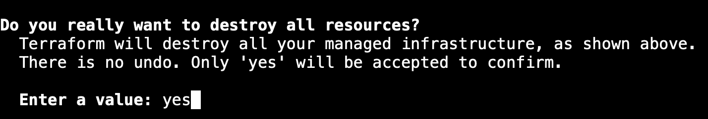
Verify nothing remains
terraform state list returning nothing confirms the teardown is complete and Terraform's state file is empty — the same clean slate the NSG project confirmed before adding its first custom rule. Starting the module refactor against a genuinely empty state means the next apply is a real creation, not a silent no-op against resources that technically still existed.
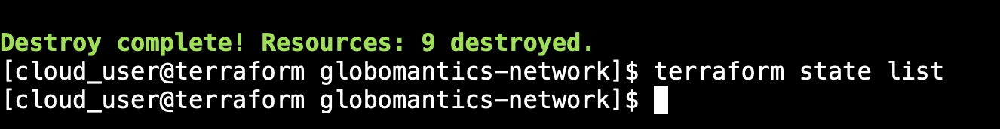
Refactoring into a reusable module
The flat configuration hardcoded every value directly in the resource blocks — fine for a one-off, but it means the same network topology can't be stood up again for a different project or environment without copy-pasting and manually re-editing CIDR blocks and names throughout. Moving the resources into modules/network and replacing hardcoded values with var.* references turns this from a single network into a template for any number of them.
Scaffold the module and declare its inputs
modules/network/variables.tf declares five inputs — VPC CIDR, both subnet CIDRs, availability zone, and a project name used for tagging — each with a sensible default matching the original flat configuration. Giving every variable a default means the module works out of the box with zero required arguments, while still being fully overridable by whatever calls it.
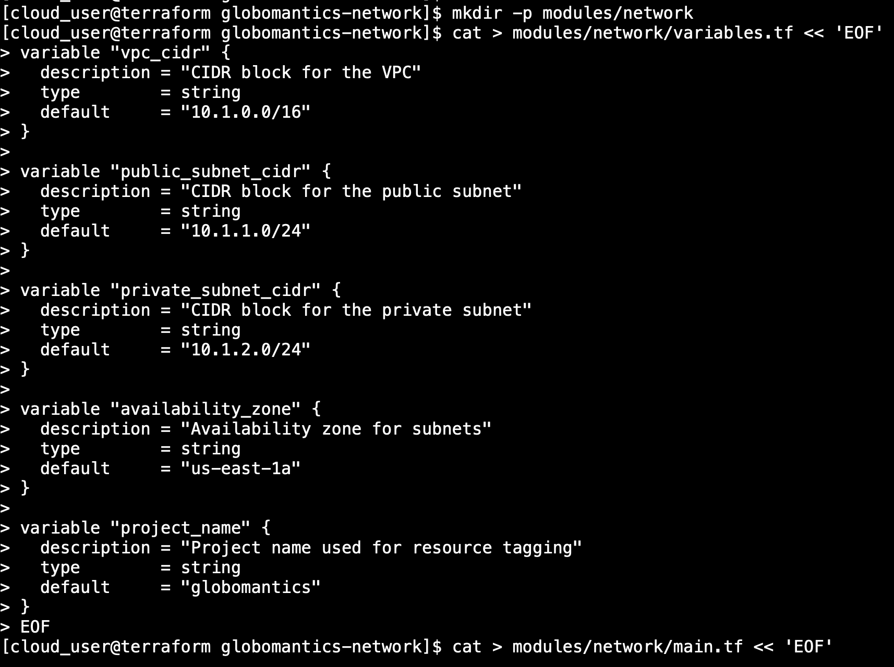
Move the resources into the module, parameterized
The VPC, both subnets, the Internet Gateway, and the public route table are the same resources as before, but every literal value that used to be hardcoded — CIDR blocks, the availability zone, the globomantics name — is now a var.* reference. The ${var.project_name}-vpc-style tags let different callers produce consistent, environment-specific naming without manually editing every resource block. AWS Name tags are labels, not unique identifiers, so they should not be treated as collision-proof resource identities.
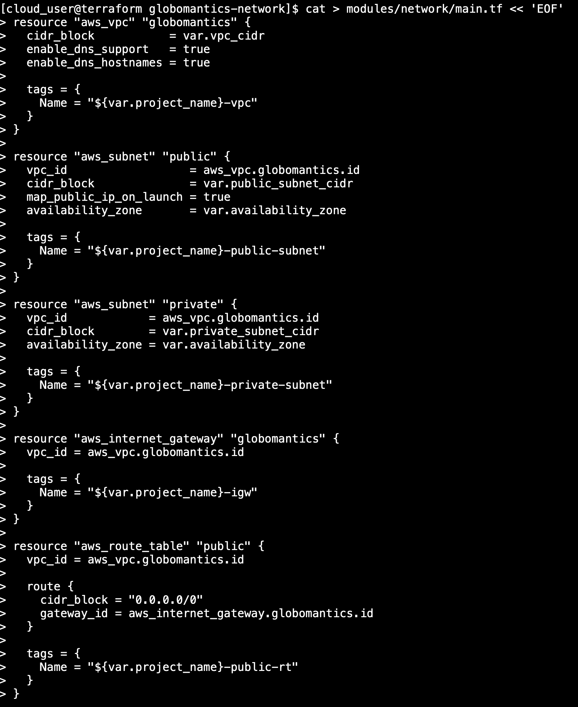
The remaining resources, same treatment
The private route table, both route table associations, and the security group complete the module. The security group's HTTP and SSH ingress rules are still scoped to 0.0.0.0/0 here — parameterizing the resource names doesn't automatically fix the rule scope; that's a separate concern a module refactor doesn't solve on its own.
A module boundary doesn't substitute for scoped access — the ingress rules themselves would still be narrowed to only what's needed, the same least-privilege baseline that applies whether the rule lives in a flat configuration or a reusable module.
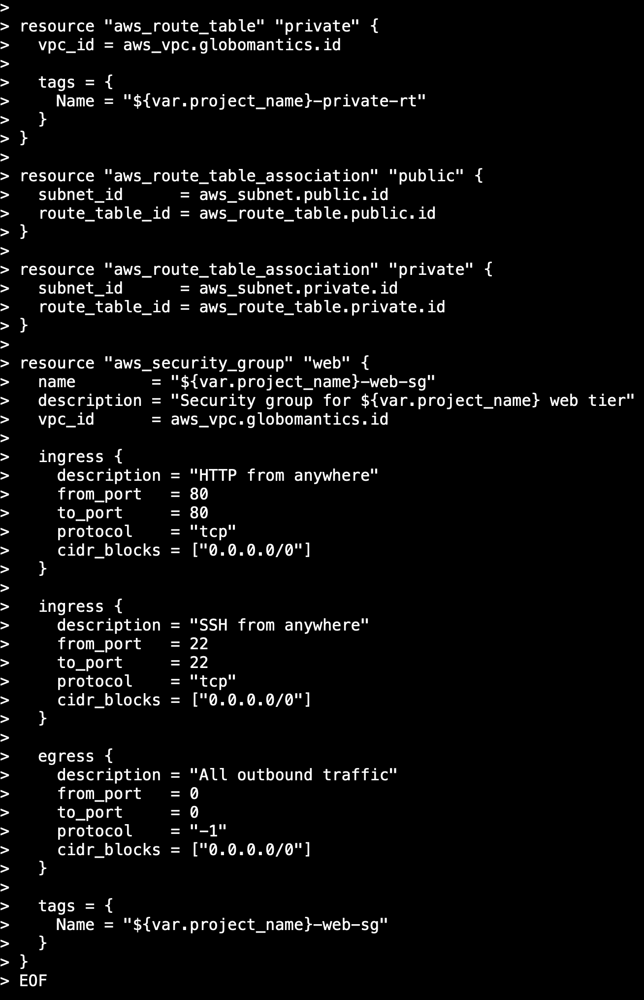
Expose the module's outputs
modules/network/outputs.tf surfaces five resource IDs — the VPC, both subnets, the gateway, and the security group — using their bare in-module resource references (aws_vpc.globomantics.id, not var.something). Outputs are how a module hands identifiers back to whatever calls it; without these, nothing outside the module could reference the VPC it just created, making the module a dead end instead of something composable with other configuration.
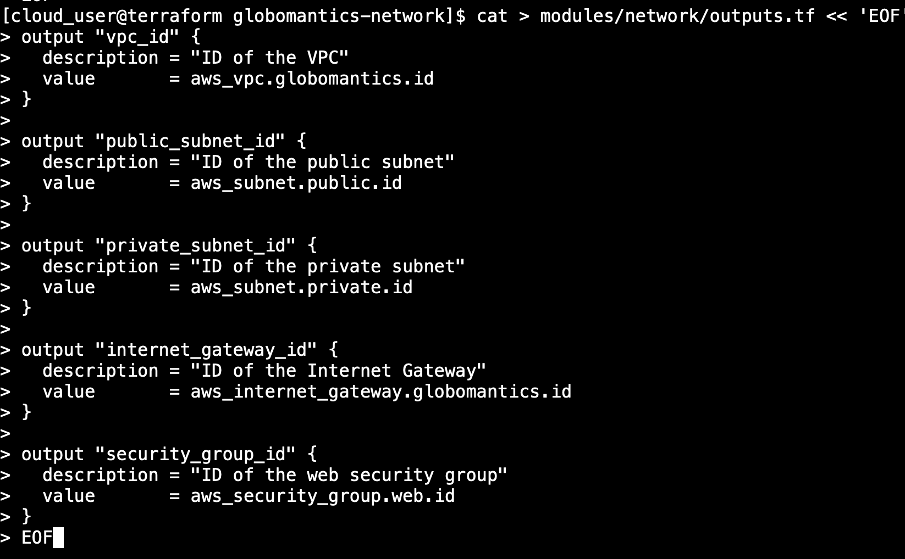
Confirm the module's files on disk
A quick ls confirms all three files — main.tf, outputs.tf, variables.tf — actually landed in modules/network/ before anything tries to call the module and fails on a missing file.
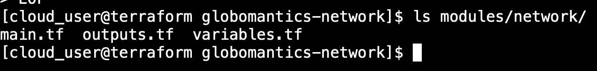
Rewrite the root configuration to call the module
The root main.tf shrinks from nine resource blocks down to a single module "network" block with source = "./modules/network" and five input arguments. This is the actual payoff of the refactor: the root configuration now reads as a declaration of intent ("give me a network with these parameters") rather than a list of every individual resource that implements it.
A shared module would be versioned and referenced by a pinned release rather than a local relative path — a standard reproducibility baseline, the same principle behind pinning a provider version.
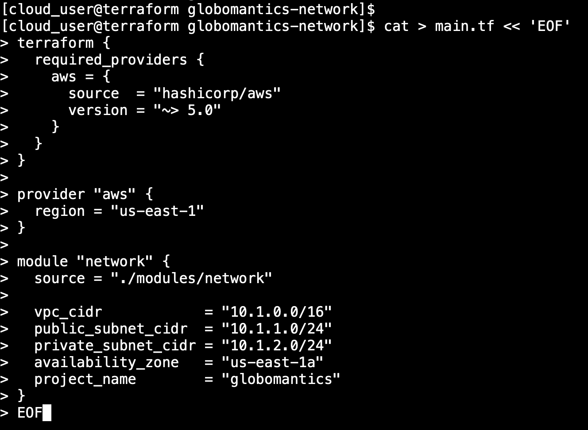
Re-expose the module's outputs at the root
A root-level outputs.tf forwards each of the module's five outputs (module.network.vpc_id, and so on) so they're still visible to anyone running terraform output against this configuration — module outputs don't automatically bubble up to the root; each one has to be explicitly re-declared to stay visible from outside.
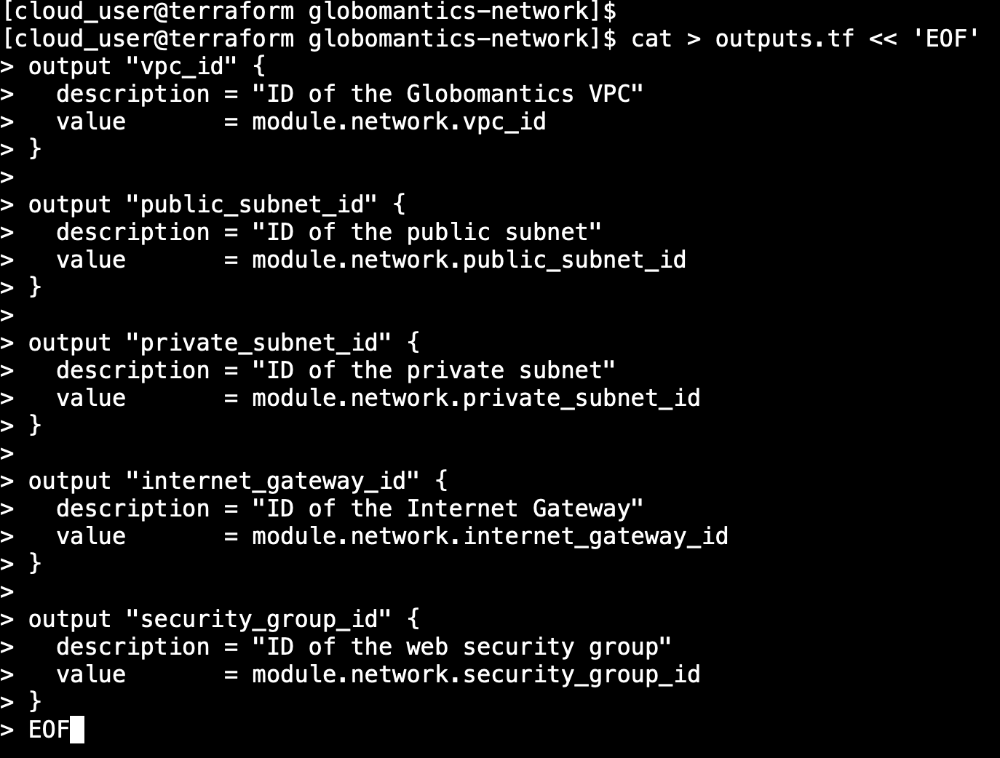
Re-initialize to register the module
terraform init run again after introducing a module reports Initializing modules... and resolves network to modules/network — a second, distinct initialization step beyond the provider plugin download from step 12. Terraform has to be told about a module's existence the same way it's told about a provider before anything referencing it will work.
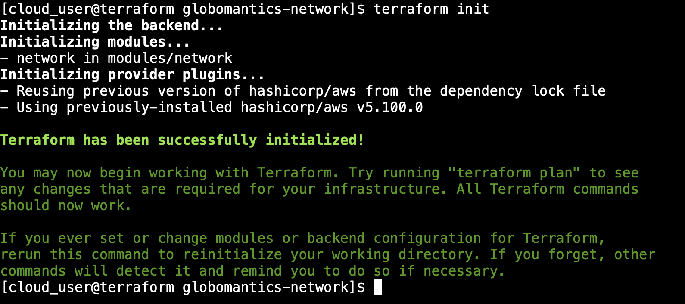
Result: terraform plan and terraform apply against the modular configuration (not separately pictured here) reproduce the identical nine resources, now all addressed as module.network.* in state — confirmed directly in the drift-detection plan output below, where every resource is listed under that same module.network. prefix.
Simulating and catching an out-of-band change
With the modular network deployed, a tag was added directly to the VPC through the AWS CLI — aws ec2 create-tags ... Key=ModifiedBy,Value=ManualChange — deliberately bypassing Terraform entirely. This is meant to simulate the single most common way infrastructure actually drifts in the real world: not malice, just someone making a quick fix through the Console or CLI under time pressure and never circling back to update the configuration that's supposed to be the source of truth.
Run terraform plan after the manual change
Terraform's plan immediately flags the VPC as needing an update in-place — not because the manual tag is inherently wrong, but because it doesn't match what the configuration says should be there. The plan proposes removing ModifiedBy = "ManualChange" specifically, because that key exists in real AWS state but nowhere in the HCL. This is the entire point of drift detection: Terraform doesn't need to be told what changed outside its knowledge — comparing declared state against real state surfaces it automatically.
A ~ next to the VPC means "update in place," and the line under it shows exactly which field changed — here, a tag that exists in AWS but not in the HCL. Plan: 0 to add, 1 to change, 0 to destroy confirms this is purely a correction, not a rebuild.
Drift detection would run on a schedule automatically rather than depending on someone happening to run plan by hand — a standard continuous-compliance baseline.
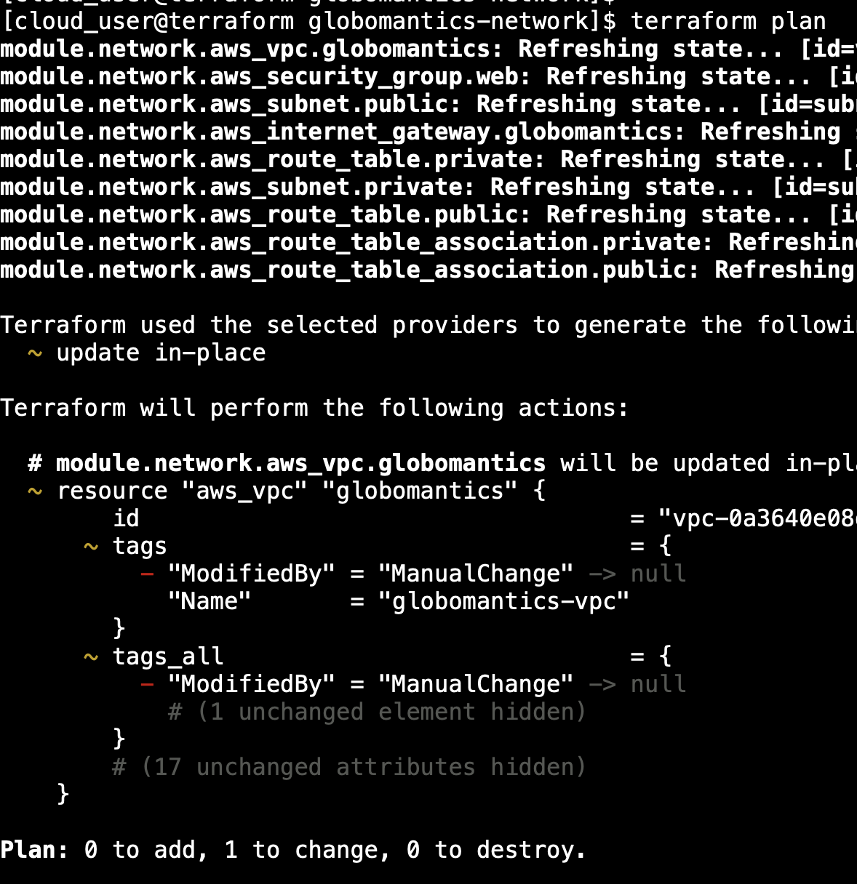
Apply to reconcile real state with configuration
Confirming this plan removes the out-of-band tag, bringing that Terraform-managed attribute back in line with the configuration. Terraform does not infer why the tag was added; it compares managed configuration against refreshed remote state. For attributes this configuration manages, differences are treated as drift unless they are explicitly ignored or handled through another lifecycle/configuration choice.
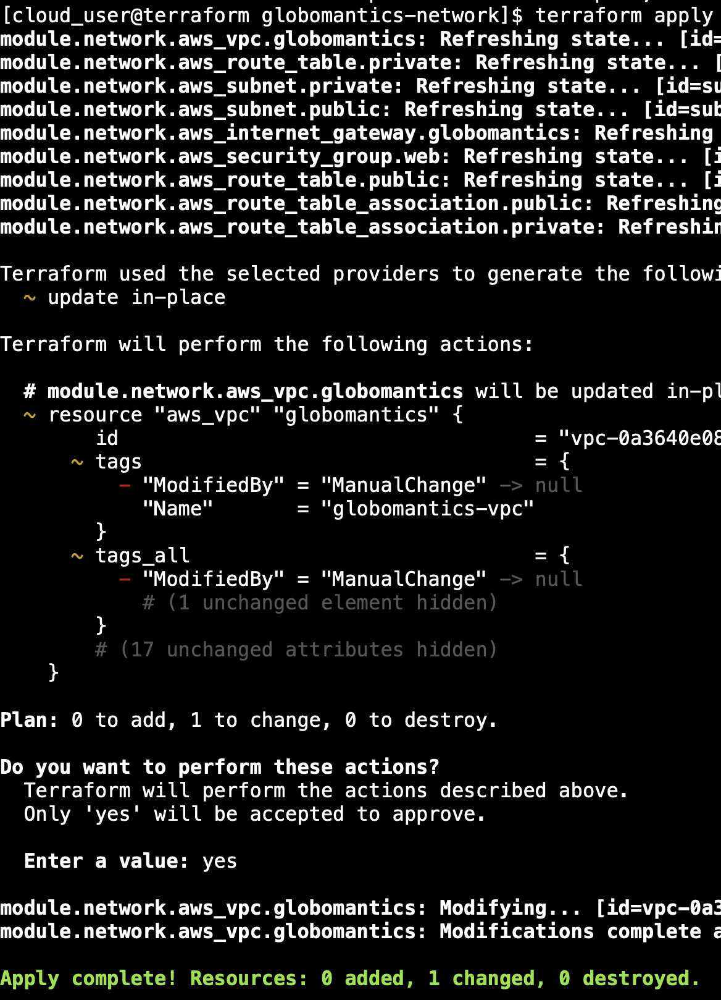
Confirm the fix with a final plan
A closing terraform plan returns No changes. Your infrastructure matches the configuration. — the same verification instinct as re-confirming the NSG rule's position in the Azure project rather than trusting the previous apply's success message alone.
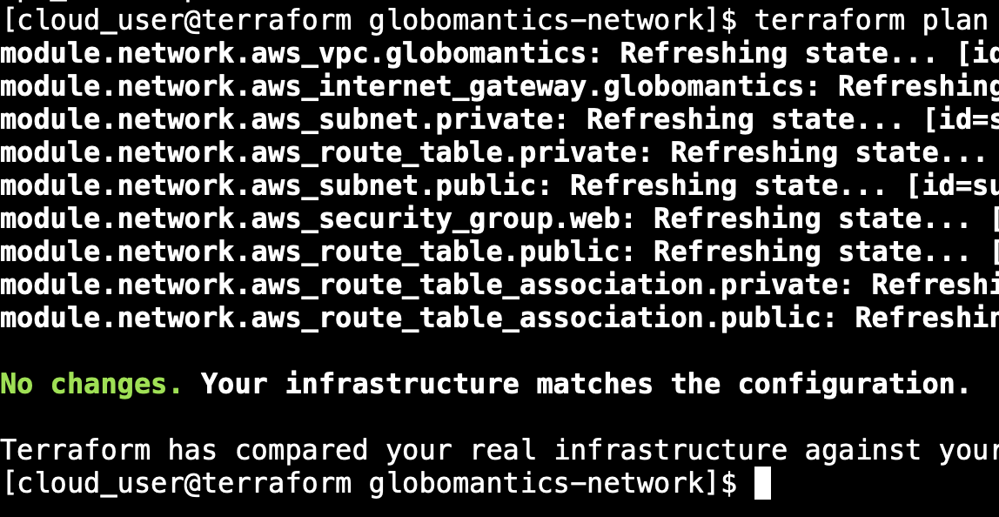
Result: a manual, out-of-band change was introduced, detected by comparing declared configuration against real infrastructure, and corrected — without ever touching the AWS Console. The configuration in main.tf remained the single source of truth throughout.
What this demonstrates
- The entire network's desired state was written down and reviewed via
terraform planbefore a single resource existed — a fundamentally different discipline than the CLI-driven work in the Azure and network security projects, where every command took effect the moment it was run. terraform planisn't only a pre-apply preview; run again after the fact, it's a drift-detection tool that catches infrastructure quietly diverging from its own configuration, which is exactly what happened when the VPC was tagged manually outside of Terraform.- Refactoring working, already-deployed resources into a module — rather than writing the module first — forced the parameterization to be grounded in something that had actually been proven to work, instead of guessing at the right variables up front.
This project was conducted in a controlled sandbox environment. Lab-only identifiers are shown intentionally for instructional clarity; production documentation would redact environment-specific identifiers and other sensitive operational details.